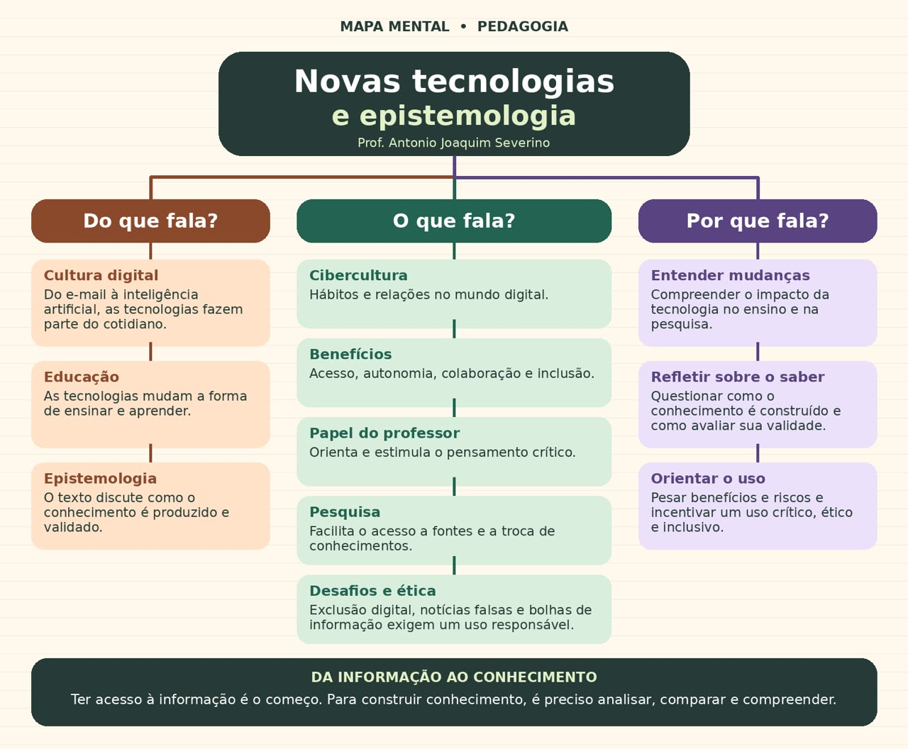

Do que fala?
Cultura Digital
A tecnologia está presente no nosso cotidiano, desde o uso do e-mail, celulares e redes sociais até a inteligência artificial.
Educação
As tecnologias mudaram a maneira de ensinar e aprender. Hoje, podemos estudar por vídeos, plataformas digitais, pesquisas na internet e inteligência artificial.
Epistemologia
É o estudo do conhecimento. Discute como adquirimos, produzimos e verificamos se uma informação é verdadeira e confiável.
O que fala?
Cibercultura
São os hábitos, comportamentos e relacionamentos que surgiram com o mundo digital.
Benefícios
A tecnologia facilita o acesso à informação, aumenta a autonomia, permite a colaboração e ajuda na inclusão.
Papel do Professor
O professor não é apenas alguém que transmite informações. Ele orienta os alunos, ensina a pensar e estimula o pensamento crítico.
Pesquisa
A internet facilita encontrar informações, consultar diferentes fontes e compartilhar conhecimentos.
Desafios e Ética
Existem problemas como exclusão digital, notícias falsas e bolhas de informação. Por isso, precisamos utilizar a tecnologia com responsabilidade.
Por que fala?
Entender Mudanças
Compreender como a tecnologia está transformando a educação e a pesquisa.
Refletir sobre o Saber
Entender que nem tudo que encontramos na internet é verdadeiro. Precisamos analisar e verificar as informações.
Orientar o Uso
Aprender a utilizar a tecnologia de maneira crítica, ética e responsável.
Mensagem Principal
Da informação ao conhecimento
Ter acesso à informação é apenas o começo. Para construir conhecimento, precisamos analisar, comparar, questionar e compreender aquilo que encontramos.
Exemplo Prático
Imagine um aluno diante de uma pergunta que não tem resposta simples:
A inteligência artificial pode substituir o professor?
A busca é só o começo. Que fontes merecem confiança? O que significa, de fato, “substituir”?
Ele encontra vários vídeos e opiniões diferentes. Veja como cada área entra em ação:
Permite que o aluno encontre essas informações.
Utiliza a tecnologia como ferramenta de aprendizagem.
Ajuda o aluno a questionar as informações, comparar fontes e construir sua própria compreensão.
Entra como orientador, ajudando o aluno a desenvolver o pensamento crítico.